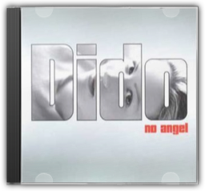
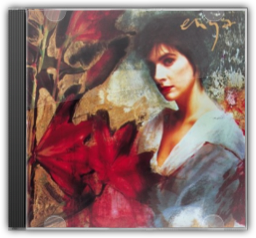
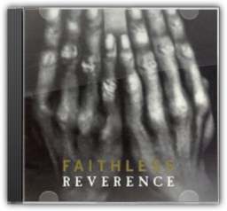

August and Everything After
Counting Crows
August and Everything After
Counting Crows


It's amazing the difference a year makes. Upon its release, August and Everything Aftersounded remarkably fresh, a welcome change from the crunch and screech of grunge. Blending the vocal athleticism of Van Morrison with the moody rock of The Band, the Counting Crows turned on a whole legion of fans turned off by modern rock. But what sounded fresh soon became stale as dozens of bands flocked to the radio with euthanised versions of the Counting Crows' sound. But you shouldn't hold that against the Crow boys. August and Everything Afteris a fantastic rock album. Though "Mr. Jones" was the money-maker, the disc features such stand-out cuts as the dark lilt of "Anna Begins", the morose "Rain King", and the outstanding U2-meets-Grant Lee Buffalo anthem "Murder of One". Maybe time, and another listen, will heal the damage wrought. —Tod Nelson  Discovery
Daft Punk
Discovery
Daft Punk
The French twosome behind Daft Punk, Thomas Bangalter and Guy-Manuel De Homem-Christo, get away with an awful lot. They go around impersonating aliens and robots in their interviews, they put records out only once every three years, and they make music that evokes a million other artists—while not really sounding like any of them. The keyboard noodlings of Jean-Michel Jarre are in there somewhere, along with the otherworldly imagery and giant hooks of '70s rock icons like Boston or even Electric Light Orchestra. There are dashes of 1999-era Prince and oodles of new wave and disco cheese, from Harold Faltermeyer and Gary Numan to the Bee Gees, all set off with efficient house beats. So how have they managed to position themselves as electronic music's next great crossover artists? On Discovery, the follow-up to the 1998 worldwide smash Homework, the answer is obvious: they have no shame, and they know how to make us dance.

No Angel [UK Edition]
Dido

Dido's debut is moulded from Sarah McLachlan's intimate soul, Sinead O'Connor's Celtic yelp and Beth Orton's morose resolve—with all the sharp edges rounded out. Sculpted by producers Rollo (her brother) and techno-scientist Youth, No Angelis dream-pop mixed with Portishead-esque trip-hop; the results are mid-tempo ballads that would feel at home in Seal's neighbourhood. The melancholy opener, "Here With Me", incorporates acoustic rhythm guitar, fluid strings and a snare-driven tempo that simulates the slapping of rain on a windscreen. "My Lover's Gone" is ethereal and misty, sounding at once ancient and modern with its synthesised ocean sounds and seagull cries. The only clunker is "Don't Think of Me", a passive, soft-bellied cousin to Alanis Morissette's "You Oughta Know". These songs play out beautifully in that quiet zone between slumber and consciousness—where you can see everything behind closed eyes. —Beth Massa  Essential Ella
Ella Fitzgerald
Essential Ella
Ella Fitzgerald
Given the sheer scale of Ella Fitzgerald's career, no definitive compilation is possible, but the 77 minutes featured on this release are, as the title has it, "essential". In 1956 Ella moved to Verve, and her album The Cole Porter Songbookwas her first release for the label. It was such a success that for the next eight years Fitzgerald recorded a definitive series of songbooks, creating in the process a unique chronicle of the finest melodies of not only Cole Porter, but of Richard Rogers and Lorenz Hart, George and Ira Gershwin, Irving Berlin, Jerome Kern and others. It is from those great albums that this anthology has been compiled, and with such a treasure-trove of American song to chose from, every selection is a superbly performed classic. Fitzgerald can be warm and tender, sardonic and blue, but is always a dazzlingly "sophisticated lady" (a track which actually appears on Verve's lavish For The Love Of Ella Fitzgeralddouble-set). Whether swinging or lamenting, and with every detail of the original tapes brought to life via exceptional remastering, Ella is in fine voice backed by impeccable arrangements. It is indeed, "'s wonderful" and the only response is to be "bewitched". —Gary S. Dalkin

Watermark
Enya
Enya's 1988 recording, Watermark, achieved landmark success with her groundbreaking use of multi-tracking technology to fuse new age and Celtic themes and instrumentation. The meticulous production defines her sound and achieves continuity even while weaving together tender ballads, piano pieces, massively layered vocal harmonies and symphonic synthesizer movements. Although Enya's pristine voice isn't especially strong, her lead vocals possess a vulnerability that reflects the lyrics' sense of personal searching. From the ubiquitous, frothy single "Orinoko Flow" to the hard, bold edge of "Cursum Perficio", Enya's style remains fresh and engaging. —Richard Price

Reverence [Import]
Faithless
With a production sound firmly rooted in club culture (Faithless ringleader Rollo was responsible for Felix's dancefloor anthem "Don't You Want Me" and co-conspirator Sister Bliss can claim to be the world's most successful female DJ), Reverenceallies house beats with shades of hip hop, blues, reggae and soul. The majority of the tracks are infused with the rhymes of Buddhist rapper Maxi Jazz, often elegant, sometimes incongruous but always distinctive. The album's breadth of ambition sometimes means Faithless spread themselves too thinly: witness the mediocre acoustic pop of "Don't Leave" and the clicheed sensuality of "If Lovin' You Is Wrong". The band are at their most memorable on the tracks which worked so well on the dancefloor: the housey hi-hats, urgent synths and insistent beats of "Salva Mea" and "Insomnia" will be recalled fondly by many a clubber. —Ed Potton  Sunday 8pm (includes bonus cd Saturday 3am)
Faithless
Sunday 8pm (includes bonus cd Saturday 3am)
Faithless
Faithless are actually a band of multiple faiths, both musical and spiritual, including Buddhism, hippy idealism and rave fanaticism. All these elements are sublimated into their dance sound, and after their mid-Nineties million-selling single "Insomnia", they were mistakenly dismissed as disposable Euro-house. The diversity of Sunday, 8pmgives the lie to this notion. It's galvanising dance music for sure, with big, overarching crowd-pleasing synth riffs courtesy of keyboardist Sister Bliss and non-performing Brian Wilson-style programmer Rollo. But then Boy George guests on "Why Go", a big ballad with a simple plea, while "Bring My Family Back" and "Take The Long Way Home" feature quietly intense, first-person raps reminiscent of Massive Attack, whose shadowy, ominous sense of melancholy is in evidence throughout the album. So when "God Is A DJ" breaks through the clouds and fills the dancefloor, it's more than just easy triumphalist hedonism; it is a blessed relief, a pleasure earned. —David Stubbs  ISDN
Future Sound Of London
ISDN
Future Sound Of London
"They're so antisocial," said Mixmaster Morris of the reclusive Future Sound of London. "They won't even go to parties anymore—they do all their gigs over the telephone." After the success of their majestic "Papua New Guinea" single and the Acceleratoralbum from which it was taken, FSOL retreated to the studio and never left. Their only communication with the outside world was through their music, an increasingly abstract Dadaist collage of overdubbed beats and noises that defied genres and stymied trend-happy journalists. While some of the material on ISDNwas previously released under the pseudonym Far Out Son of Lung (the worst-kept secret in dance music), the bulk of the album was taped from performances delivered via digital telephone links to radio stations throughout Europe. Naturally, the ubiquitous and intrusive medium of radio encourages challenging and elaborate environmental music. So unlike their previous album, Lifeforms, whose closest earthly relation was techno, ISDNis the distant cousin of jazz, both in its blatant sampling of sax and drums and its freeform, exploratory nature. —Matthew Corwine  Dead Cities
Future Sound Of London
Dead Cities
Future Sound Of London
This U.K. duo's landmark ambient techno album Lifeforms(1994) explored lush jungle vistas. Its follow-up opts for a much darker urban nightmare motif that makes it an ideal soundtrack while reading William Gibson. Progressive rockers by any other name, FSOL are highly respected innovators who rate with Orbital as the genre's leading exponent. —Jeff Bateman |


 Made with Delicious Library
Made with Delicious Library
Springfield, State zipflap congrotus delicious library Clancy, Liam